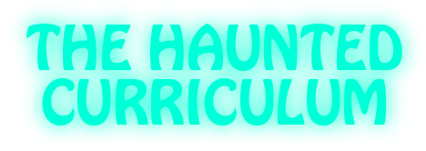
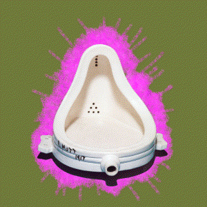
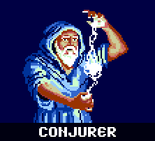
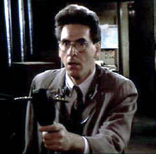
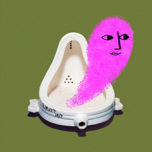
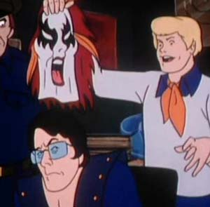
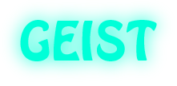
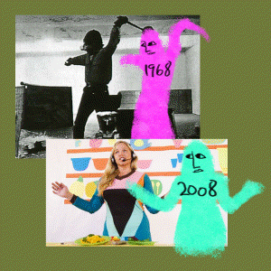
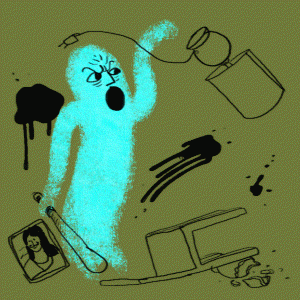
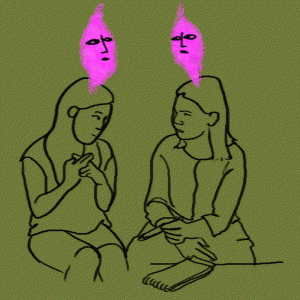

What denotes an object or action as ‘artistic’? Consider Walter Benjamin’s notion of an “aura” possessed by an art object.
In trying to think of a metaphor for an immaterial and (in some ways) undetectable quality radiating from an artwork, I first considered “radioactivity,” but the Cold-War-era science and culture connotation of the image left me a little, well, cold.



‘What if the work was haunted?’
The artist imbuing the object with its ‘ghost’ could be cast as either a conjurer/necromancer who elicits and implants a strange agent in the work, or as a dowser/medium, who detects and indicates an auspicious quality that was already present in the object but previously invisible. Both interpretations are interesting and feel true, and I like the ambiguous allowance for both.
A ghost is also something that is initially frightening, but whose ‘ghastliness’ can be explained away with proper semantic framing. Likewise a challenging work can be seen as a cultural or intellectual threat to someone with little art experience, but when framed properly can be demystified to a degree and made relatable.
However, just as a materialist worldview doesn’t preclude one being frightened by a ghost story or a convincingly ‘haunted’ atmosphere, no amount of framing or explanation can divest a great artwork of all of its spectral power.


The idea of linking two immaterial entities (art and ghosts) also produces a kind of open, ungrounded metaphor (like “God is love”), which produces more questions than explanations.
To open this idea up a bit more (perhaps at my own peril), I link this “ghost” to its German antecedent “geist”, which encompasses and combines the semantic space divided by English into ‘ghost,’ ‘spirit,’ and ‘mind’ (a space where a creative ‘brainstorm’ can be a ‘geistesblitz,’ or ‘ghost flash’!). This lets me scaffold different curricular goals/domains under the auspices of different varieties of ‘geist’:

The zeitgeist, the “time ghost,” is related to Hegel’s use of “weltgeist” (“world spirit”) and “volksgeist” to describe “spirit” as a sort of active agent of history.
The zeitgeist relates to the art educational practice of looking to history to inform artistic practice. By recreating the (mental/physical/creative) process of an artist from another time, I can experience the spirit that animated them to make that art, and relate it to my own life and practice.
Art education’s attitude toward history should suss out these ancient ghosts to make sure that the historically-informed work made by students is living and auratic, and not simply a facsimile.

Poltergeists are noisy, aggressive, and anarchic spirits. In popular imagination and in credulous parapsychological fields, they are often associated with the traumatic emotions of younger members of a household.
The poltergeist facet of the metaphor encompasses art’s role as a channel for the emotions, a tool for transgressing rules, and a way of being heard. It is expressive, destructive, and LOUD.

The Heilige Geist reflects art’s ability to communicate and connect. Just as the spirit in the Pentecost story bridged the Babel-babble of dialects between the assembled disciples, art can succeed at communicating ideas where traditional verbal communication fails.
Students can give their work worth in one way by communicating meaning through it. Art can also foster engagement within a community and create a space for meaningful interpersonal interactions such as play, dialogue, and exchanging gifts.